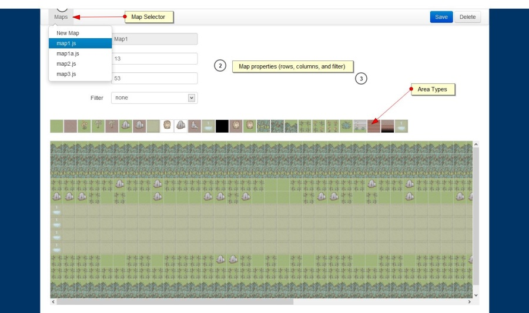

Introduction
Map Editor for Unilluminated is a single page application. Its purpose is to help us developing map for Unilluminated, our 2d HTML5 game.
Instructions

To load or create new page you need to click the map selector on top left navigation bar.
You can change map properties like name (only for new map), rows, columns, and filter via input boxes.
Furthermore, you can directly alter the area in map, by selecting area type and click directly in actual map position.
To save the changes you need to click the "Save" button on top right part of navigation bar.